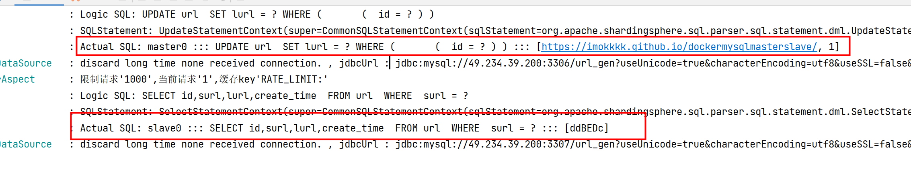

分库分表
理论
什么情况下需要分库分表？
MySQL单表容量大于1000万(BTREE索引树在3-5层之间)。
垂直切分
垂直分库
根据业务耦合性，将业务关联度低的不同表存储在不同的数据库。类似于”微服务”。
垂直分表
把一个表的多个字段拆分成多个表，一般按字段的冷热拆分，热字段一个表，冷字段一个表。
优点
- 同时解决了业务层面的耦合；
- 一定程度提升IO、数据库连接数、单机硬件的资源瓶颈。
缺点
- 无法使用sql join，需要编码进行聚合操作，开发复杂度增加；
- 分布式事务处理复杂；
- 依然存在单表数据量大的问题。
水平切分
水平分库
水平分表
优点
- 解决单表数据量过大的问题；
- 业务编码改造相对较小。
缺点
- 跨分片的事务一致性难以保证；
- 跨库的join关联查询性能差。
数据分片规则
Hash取模
按照数据的某一特征（key）来计算哈希值，并将哈希值与系统中的节点建立映射关系，从而将哈希值不同的数据分布到不同的节点上。
如选择id作为数据分片的key，n台实例，则取id的hash值 % n得到的结果就是数据所在实例。
优点
- 实现简单
缺点
- 加入或者删除一个节点的时候，需要迁移大量的数据；
- 很难解决数据不均衡的问题；
- 如果查询条件中不带用于分片的key，那么需要查询所有分库，再在内存中合并数据，效率低，复杂度高/
范围分片
按照关键值划分成不同的区间，每个物理节点负责一个或者多个区间。
如id 0-10000数据位于实例1，10000-20000位于实例2…。
优点
- 单表/库大小可控；
- 易于水平扩展，假如/删除实例时，无需对其它实例的数据迁移；
- 易于范围查询。
缺点
- 热点数据(如按时间字段分片)；
- 元数据(每个实例存储哪些数据区间)相对复杂一些。
一致性Hash
一致性 hash 是将数据按照特征值映射到一个首尾相接的 hash 环上，同时也将节点（按照 IP 地址或者机器名 hash）映射到这个环上。对于数据，从数据在环上的位置开始，顺时针找到的第一个节点即为数据的存储节点。
特点
- 一致性 hash 方式在增删的时候只会影响到 hash 环上相邻的节点，不会发生大规模的数据迁移；
- 一致性 hash 方式在增加节点时，只能分摊一个节点的压力；删除节点时，改节点的压力只能转移到下一个节点，所以实际工程中一般引入虚拟节点，即节点个数远大于物理节点个数，一个物理节点负责多个虚拟节点的真实存储。操作数据时，先通过hash环找到对应的虚拟节点，再通过虚拟节点与物理节点的映射关系找到对应的物理节点。
优点
- 一致性 hash 方式在节点增删的时候只会影响到 hash 环上相邻的节点，不会发生大规模的数据迁移；
- 可以根据物理节点的性能来调整每一个物理节点对于虚拟节点的数量，充分、合理利用资源。
缺点
- 需要维护的元数据增加(虚拟节点与物理节点的映射关系)
分库分表引入的问题
分布式事务
跨节点join关联查询
- 字段冗余：空间换时间，避免join查询。如订单表保存userId时候，也将userName冗余保存一份，这样查询订单详情时就不需要再去查询”user表”；
- 数据组装：分为多次子查询请求，最后在内存中组装结果。
跨节点分页、排序、函数问题
当排序字段就是分片字段时，通过分片规则就比较容易定位到指定的分片；如果排序字段非分片字段，需要在不同的分片节点中将数据进行排序并返回，然后将不同分片返回的结果集进行汇总和再次排序。
全局主键
雪花算法(时钟回拨问题)，百度uid-generator，美团Leaf、
ShardingShere
ShardingSphere 是一款分布式的数据库生态系统， 可以将任意数据库转换为分布式数据库，并通过数据分片、弹性伸缩、加密等能力对原有数据库进行增强。
常用功能
- 数据分片
- 分库 & 分表
- 读写分离
- 分片策略定制
- 无中心化分布式主键
- 分布式事务
- LOCAL 事务
- XA 强一致性事务
- BASE柔性事务
- 数据库治理
- 数据脱敏、加密
- 流量治理
- 数据迁移
ShardingSphere-JDBC
ShardingSphere-Proxy
结果归并
将各个数据节点获取的多数据结果集，组合、处理成一个结果集并返回给请求。
遍历、排序、分组、分页、聚合。
遍历归并
将多个数据结果集合并为一个单向链表；
排序归并
每个数据结果集自身有序，所以需要对多个有序的数组进行排序；ShardingSphere在对排序的查询进行归并时，将每个结果集的当前数据值进行比较（通过实现Java的Comparable接口完成），并将其放入
优先级队列。分组归并
流式分组归并：要求SQL的排序项与分组项的字段及排序类型(ASC或DESC)必须保持一致；
内存归并
聚合归并
装饰者模式
分页归并
ShardingSphere通过
装饰者模式来增加对数据结果集进行分页的能力。
实践
ShardingSphere读写分离
Docker部署主从MySQL
参考：https://imokkkk.github.io/dockermysqlmasterslave/
代码实现
依赖
1
2
3
4
5
6
7
8
9
10
11<dependency>
<groupId>org.apache.shardingsphere</groupId>
<artifactId>sharding-jdbc-spring-boot-starter</artifactId>
<version>4.1.1</version>
</dependency>
<!-- 必须搭配druid，不能使用druid-spring-boot-starter-->
<dependency>
<groupId>com.alibaba</groupId>
<artifactId>druid</artifactId>
<version>1.2.8</version>
</dependency>配置
1
2
3
4
5
6
7
8
9
10
11
12
13
14
15
16
17
18
19
20
21
22
23
24
25
26
27
28spring:
main:
allow-bean-definition-overriding: true
shardingsphere:
datasource:
names: master0,slave0
master0:
type: com.alibaba.druid.pool.DruidDataSource
driver-class-name: com.mysql.cj.jdbc.Driver
url: jdbc:mysql://49.234.xx.xxx:3306/url_gen?useUnicode=true&characterEncoding=utf8&useSSL=false&serverTimezone=GMT%2B8
username: root
password: ENC(xPowsGGk7qtWdvCvCtChLOVLXPAyMPOrrZWKSmN5mwyKIzgAwBxNx4uxcJ+9Ksbn)
slave0:
type: com.alibaba.druid.pool.DruidDataSource
driver-class-name: com.mysql.cj.jdbc.Driver
url: jdbc:mysql://49.234.xx.xxx:3307/url_gen?useUnicode=true&characterEncoding=utf8&useSSL=false&serverTimezone=GMT%2B8
username: root
password: 123456
sharding:
master-slave-rules:
ms:
masterDataSourceName: master0
slaveDataSourceNames:
- slave0
load-balance-algorithm-type: round_robin
props:
sql:
show: true效果
增删改操作主库，查询操作从库：

详细的实现代码：https://github.com/ImOkkkk/short-link-generator/tree/shardingsphere-read-write-splitting